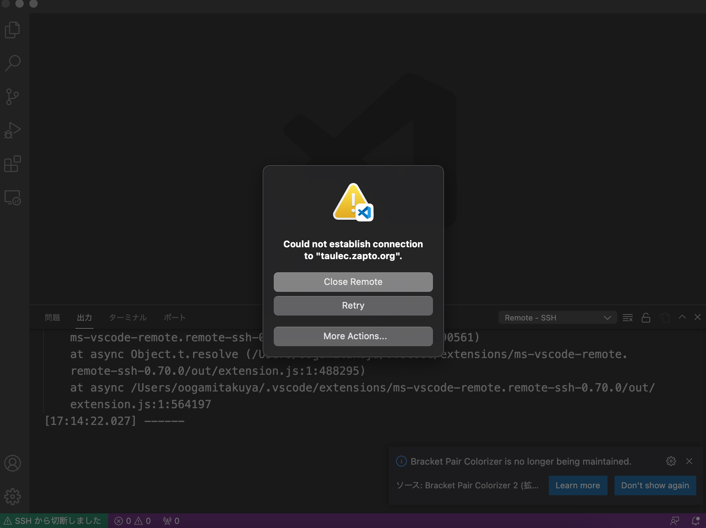

すでに自宅などでパソコンを使っている人は多いと思います． Windows, Mac OSという製品名はほとんどの人が聞いたことがあるでしょう． これらはみなオペレーティングシステムの実例です． サーバ用にはLinuxというOSが圧倒的に普及していますし, スマホ用のOSであるAndroidもLinuxが元になって作られています.
OSはコンピュータを動かすにあたって，最も基本的なソフトウェアです． OSの厳密な「定義」は難しく，左のような言い方でごまかすのが普通です．OS が何か？という問いに対する短い答えを追い求める代わりに，OSのないコン ピュータとそうでないコンピュータの(その上の応用ソフトウェアを作る人の 立場から見た)違いについて簡単に触れるのが有益かと思います．
卒業論文，またはその後の研究において，オペレーティングシステムその ものや，ネットワーキング（インターネット），プログラミング言語，セキュ リティ，並列・分散計算など，その他あらゆる，コンピュータの基盤に関わる 研究をしたいと思っている人は，迷わずオペレーティングシステムを学ぶべき です．オペレーティングシステムを学ぶことは，大雑把に言って，コンピュー タソフトウェアが根本的なところで「どう動くか」を学ぶことと同じです．
私はコンピュータのシステムそのものの勉強がしたいのではなく，コンピュー タを使った情報処理（自然言語，画像，音声，etc.）ができればそれで満足だ， 細かいOSの機能などはどうでもよい，という人もいることでしょう．そのよう な人にも，単位を取る以上の動機付けをあたえるとすると以下のようになるで しょう．
OSを学ぶ気になったでしょうか？
普通の講義と同様，教室での講義をすることになると思います．ただし， OSは黒板の上で説明するだけで面白いものではありません．OSを学ぶのは，コ ンピュータの最もweirdな(「変な」)部分を学ぶことですから，コンピュータ にたくさんさわらずに，あるいはさわったとしても，メールやWEBを使うだけ ではOSを「体感」することはできません（これはOSの役割が「縁の下の力持ち」 でることを考えれば当たり前です）．したがって，ときおりプログラミング演 習的な要素を取り入れる予定です．
単位も普通に試験で行うことになるでしょ うが，これもOSは筆記試験だけで出来を決めるのは，体育の試験を筆記試験で やるのに近いものを感じます．そこで，プログラミング演習で力作を課して， その出来によっては試験を免除するということも考えています．詳細は授業中 にお知らせします(どんなことが行われたかは以下 を見ると少しはわかるでしょう)．要するにプログラミングのためにコン ピュータを長時間触る(コンピュータ好きがコンピュータに「ハマル」)機会を 作りたいと考えています．
また，もうひとつの選択肢として，授業の最後の方の時間を利用して，少 し高度な内容を本や論文から調べて，発表してもらうという時間を作りました． ちょっと高度すぎたかも知れませんが，同様の主旨の企画は今年も作ろうかと 思っています．
特定の教科書は使いません．以下は私が参考にする本で，興味があれば入 手してください．図書に推薦してありますので，おそらく図書に入荷すると思 います(入荷していなかったら知らせてください)．どれか一冊読んでみたいが， 迷っている人は1. を見るとよいと思います．このリストは今後も更新してい きます．以下のいくつかの本には邦訳が出ています．英語で読むことをお勧め しますが，もし興味があれば探ってみてください．
何が起きているのかを調査したところどうやら,
すぐに抜本的回避策が見つかるとは思えないことと, (a)についてはユーザが多数のnotebookを開いていると必然的に生じてしまうことから抜本的な解決策は追求せず, 対処療法として, 1/31 13:30 頃から, マシンのメモリを増やして再立ち上げをします. ご了承ください(長くても 15:30ごろには復活できるとおもいます).
16:00 ごろ, マシンの再立ち上げは終了しました. 時間がかかりすいません. 一度触ってみて, 異常がないことを確かめてもらえるとありがたいです. 不審な点があればお知らせください. 一点, SSH コマンドで端末でアクセスしている人向けのお知らせ. マシンの最立ち上げによりホストのキーが変わった関係で, SSHでアクセスしようとすると以下のようなエラーが(多分)出ます.
$ ssh u21xxx@taulec.zapto.org @@@@@@@@@@@@@@@@@@@@@@@@@@@@@@@@@@@@@@@@@@@@@@@@@@@@@@@@@@@ @ WARNING: REMOTE HOST IDENTIFICATION HAS CHANGED! @ @@@@@@@@@@@@@@@@@@@@@@@@@@@@@@@@@@@@@@@@@@@@@@@@@@@@@@@@@@@ IT IS POSSIBLE THAT SOMEONE IS DOING SOMETHING NASTY! Someone could be eavesdropping on you right now (man-in-the-middle attack)! It is also possible that a host key has just been changed. The fingerprint for the ED25519 key sent by the remote host is SHA256:V6uBZv9txFCAk8drAK6X5f1Oi7zz6IYnQt2kwCtJ9dc. Please contact your system administrator. Add correct host key in /xxxxxx/.ssh/known_hosts to get rid of this message. Offending ECDSA key in /xxxxxx/.ssh/known_hosts:21 Host key for taulec.zapto.org has changed and you have requested strict checking. Host key verification failed.
対処方法は, 基本は, 書かれているエラーメッセージの指示に従えばよいですが, 上記の場合は, /xxxxxx/.ssh/known_hostsというファイルの 21行目がエラーの原因 (Offending ECDSA key)ということなのでその行を取り除けばよいです.
その後もう一度SSHするときに「初めて見るホストだけどつなげてよいか?」みたいなことを 聞かれるのでよいと答えてください(今回のエラーは, 「前につなげたホストと違うのにつないでいるみたい」というエラーです). よく考えると, 本当はホストが持っているキーを保存して新しいホストへ移行すれば, こんなことにはならなかったのだと思いますがすいません(あ, でもIPアドレスが違うという ところは文句を言われるかな. 確信なし).
なおknown_hosts の所定の行を消す代わりに, ファイルをまるごと消しても普通は問題ありません (以前につないだホストの情報がすべて失われるのでしばらくSSHするたびに, 「初めて見るホストだけどつなげてよいか?」みたいなことを聞かれることになる).
また, 田浦はよく知らない vscode というエディタで, taulec.zapto.org上のファイルを(中ではSSH経由で)アクセスして編集するという 機能を使っている人も, 同じ理由でエラーを食らうようです. 添付のようなエラーになるという報告がありました. 理由と対処方法は上記と同じですので, 上記と同じように対処してみてください. 
======= (オプション: 適宜時候の挨拶など(「いかがお過ごしでしょうか」的な)を挿入) 課題 os01 をJupyter上でSubmitしました =======
git clone https://github.com/taura/install_some_jupyter_kernels.gitまたは
git clone git@github.com:taura/install_some_jupyter_kernels.git
//% cmd: mkdir -p ~/.ssh/ //% cmd: cp id_rsa.pub ~/.ssh/authorized_keys //% cmd: cat ~/.ssh/authorized_keys直すには以下を実行してください.
//% cmd: chmod 755 ~/.ssh //% cmd: chmod 644 ~/.ssh/authorized_keys
//% cmd: ls -ld ~/.ssh //% cmd: ls -l ~/.ssh/authorized_keysとして出力が以下のよう(drwxr-xr-x と rw-r--r--) になっていれば正解です
drwxr-xr-x 2 u20xxx u20xxx 4096 Jun 23 2019 /home/u20xxx/.ssh -rw-r--r-- 1 u20xxx u20xxx 1662 Jun 23 2019 /home/u20xxx/.ssh/authorized_keys
「Meltdown脆弱性 〜ｺﾝﾋﾟｭﾛﾋﾟｭﾛｱｯｷﾃｸﾁｮ!!〜」 (原文ママ)が行われます. 田浦の授業に飽きたのでもういいや, な人も参加して下さい.
(ITC-LMSに登録されたメールアドレスに送信しています).
田浦です.
このメールは, オペレーティングシステムの試験を受けているが, 課題を一部または全部がITC-LMS上で提出されていない人に送られています.
課題1: unagi_serverのスレッド用いたgetの並列化 (締め切り2018/12/1)
課題2: unagi_serverのスレッド用いた安全な並列化 (締め切り2018/12/1)
間違いがないか確認し, 「きちんと提出したはずなのにITC-LMS上で提出されていない. 何かの間違いのはず」という場合は連絡を下さい. その際, 授業でコードやレポートの提出に用いたdoss-gitlab上の課題提出フォルダへのリンクも送って下さい(例: https://doss-gitlab.eidos.ic.i.u-tokyo.ac.jp/xxxxxx/unagi/tree/master/submit ).
注: あくまでシステム上の間違いで提出したはずのレポートが受け取られていないことがないかを確認するための連絡です. これからのレポート提出を受け付けるという意味ではありません.
unagiサーバの次の(+最後の)課題は, 以下のようなものになる予定.
現在のunagiサーバは, 起動時には常に空の状態であるし, データは全て主記憶にしかおかないので, 主記憶を越えるデータを扱うのは難しい (正確には「スラッシング」がおこる). どちらもちゃんとした検索エンジンにはあってはならない状態.
関連して,
も必要になる. 現在はすべての検索を, 全ドキュメントをスキャン(頭から終わりまで全て読む)することで 実現しているが, 遅い. ただし索引は, 多分にアルゴリズムの要素が強くOSの本題とはやや離れる, 索引にも様々なやり方がある, 正しく自力で実装するのは大変, などの理由から, こちらで参照コードを提供する (しかし例によって, 出す方の準備が間に合っていない状態orz). 検索については, 配列の2分探索 (binary search) を復習しておくと良い (2分「木」探索ではなく, 配列の2分探索).
課題を行う上での解説がたくさん必要なので必要事項の解説を 次週(12/11)に行う予定.
多分, 3週間後(11/27 ごろ)になる予定です. 相変わらず提出手順など詳細未定義で すいませんが, 追ってアナウンスします. 内容ですが, 長い作文は課しません. 所定の手順で 走らせる(こちらで実行, 確認)ことができるコードを, gitlabで提出し, 正しく実行し, 性能測定を行ったという ことがわかるログのようなもの(だけ)の提出とする予定です (翻訳: 実際にプログラミングを実行する以外の部分を多く課さない). 詳細指示は常に gitlab の所定の フォルダに書きます.
最初の課題(以下)を拡張して, put (ドキュメントの追加)要求が 他の要求と並行してやってきても正しく処理できる(データが壊れない) ようにせよ. ヒント: 授業でやった Pthread の mutex を使えば良い. ただしそれだと get 要求まですべて排他制御して処理することになる. Pthreadの reader writer lock という物を使うと, reader しかいない間はそれらを並行に走らせることができる.
スレッドを用いて, サーバが複数の接続を並行に処理するようにせよ. そして, 多数の get, getc 要求を並行に処理できるようにせよ. ただしそのとき, put (ドキュメントの追加)要求が 他の要求と並行にやってくることはないと仮定して良い. 言い換えれば, もしputが他の要求と並行にやってきたら, 異常動作, サーバが終了するなど, 何がおきても構わない (「動作は未定義」が仕様). putを並行処理することの何が問題かは本日の講義で理解してください. ヒント: 関係個所は run_server という関数. 接続を受付け, 出来た接続を処理する関数 server_process_connection が, 新しいスレッドによって処理されるように書き換える.
git clone https://doss-gitlab.eidos.ic.i.u-tokyo.ac.jp/tau/unagi.git
使えない場合は, ダウンロードボタンがページの上の方にあるので,
好きなものを使ってダウンロードしてください.
今日は紹介と以降の予定を説明します.
質問を sli.doでevent code 4405 と入力して投げてください.Performance Implications of Extended Page Tables on Virtualized x86 Processors 発表資料, 元論文
発表テーマ: 仮想マシンに関して
1/10 (火) の授業を休講とさせていただきます．
2017年1/16 (月) 23:59とします．
{kind=link}